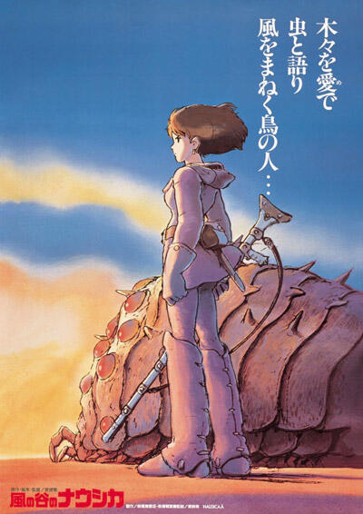
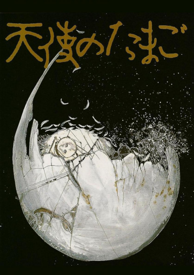
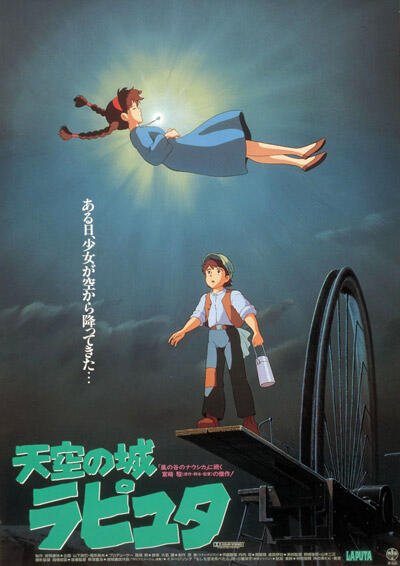
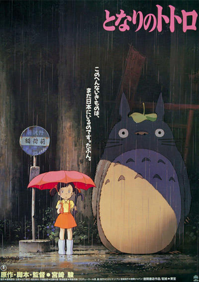
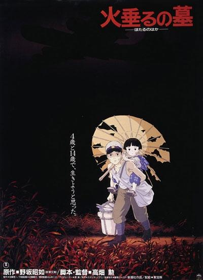
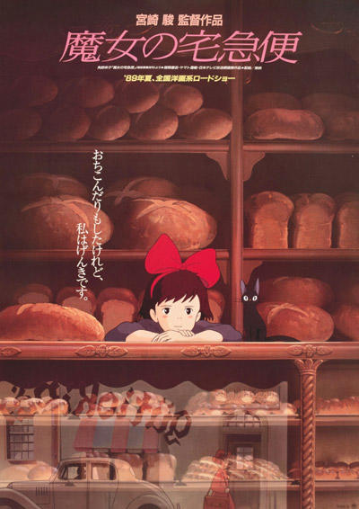

Tuulen laakson NausicaäJulkaisuvuosi: 1984Ohjaaja: Hayao Miyazaki |
 |
|---|---|
Angel's EggJulkaisuvuosi: 1985Ohjaaja: Mamoru Oshii |
 |
Laputa – linna taivaallaJulkaisuvuosi: 1986Ohjaaja: Hayao Miyazaki |
 |
Naapurini TotoroJulkaisuvuosi: 1988Ohjaaja: Hayao Miyazaki |
 |
Tulikärpästen hautaJulkaisuvuosi: 1988Ohjaaja: Isao Takahata |
 |
Kikin lähettipalveluJulkaisuvuosi: 1989Ohjaaja: Hayao Miyazaki |
 |